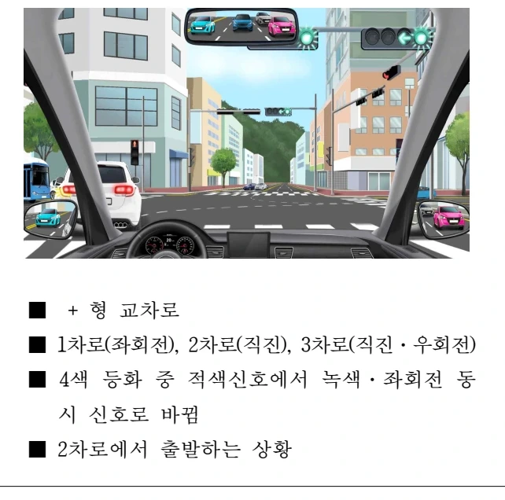

785. Which of the following are the safest ways to drive in the given situation? (Select TWO)

- ①Accelerate quickly after the light changes to pass through the intersection swiftly.
- ②Turn left with your left-turn signal on, while paying attention to other vehicles.
- ③Accelerate sharply within the intersection and switch to the right lane to pass through.
- ④Consider why the white car is stopping and proceed slowly, preparing for any hazards.
- ⑤Gradually increase your speed to pass through while checking both sides for any vehicles disobeying the traffic signal.
Show answer
Answer
④ Consider why the white car is stopping and proceed slowly, preparing for any hazards.
⑤ Gradually increase your speed to pass through while checking both sides for any vehicles disobeying the traffic signal.
Reference
In order to turn left or right at an intersection, drivers must first enter the left or right turn lane and turn left or right. The reason that the driver of a left-turn vehicle that started first in the first lane applies the brakes immediately after the signal changes to green and left turn simultaneously at an intersection means that a risk factor, such as a vehicle that violates the signal, has occurred on the left road. Therefore, vehicles in the second or third lane must drive slowly and prepare for risk factors, and are also prohibited from overtaking other cars at intersections, in tunnels, or on bridges.
Reference text is a machine translation for study.